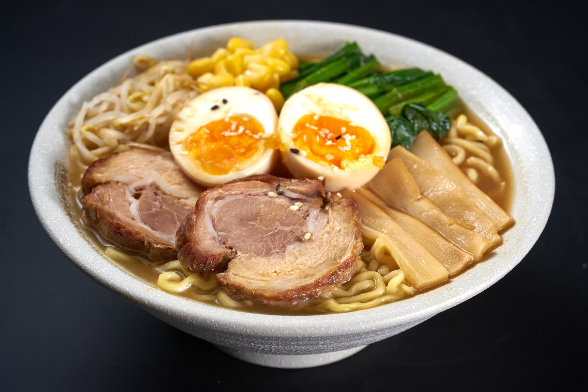
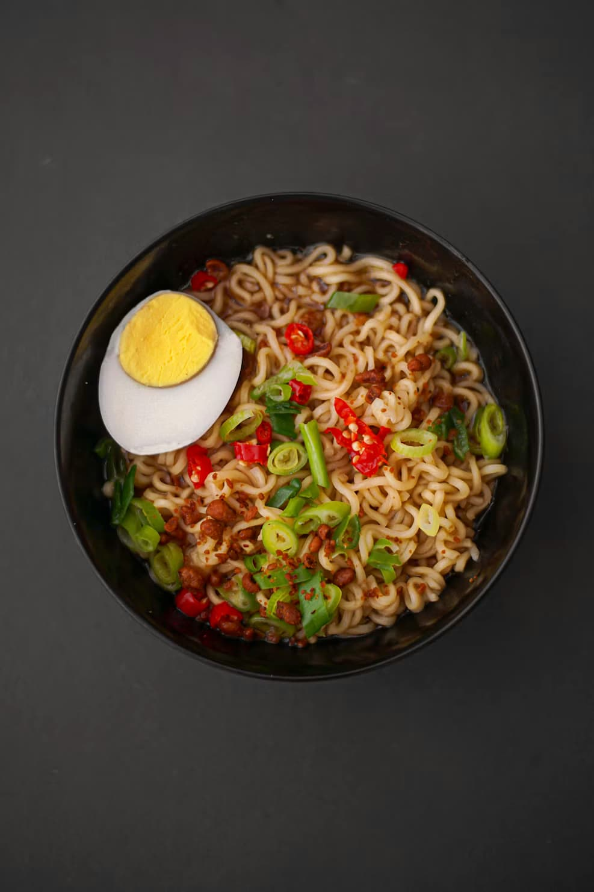
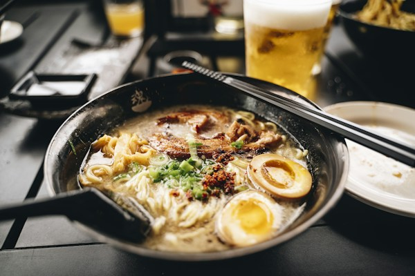

El Ramen
De dónde viene, los tipos de caldo que existen y la forma tradicional de comerlo.

El ramen no nació en Japón, sino que vino de la cocina china a finales del siglo XIX. Al principio se vendía en puestos ambulantes en la calle, pero después de la Segunda Guerra Mundial se hizo famoso en todo el país porque la harina de trigo era barata y permitía hacer fideos rápido.
Hoy en día hay cuatro tipos principales según la salsa que le ponen al fondo del plato: shoyu (con salsa de soja), shio (con sal), miso (con pasta de soja fermentada) y tonkotsu, que se hace cociendo huesos de cerdo durante bastantes horas hasta que el caldo queda blanco y espeso.
Para comerlo bien hay que hacerlo rápido, antes de que los fideos se ablanden demasiado con el caldo caliente. En Japón es muy normal hacer ruido al sorber los fideos; no es de mala educación, sirve para enfriar la pasta según entra en la boca y no quemarte.
Imágenes del plato


